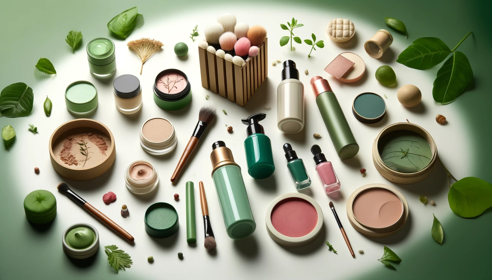
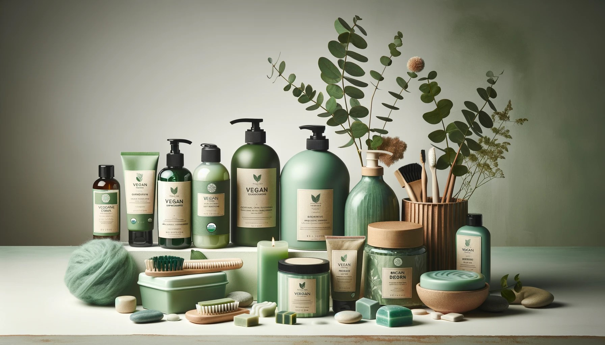
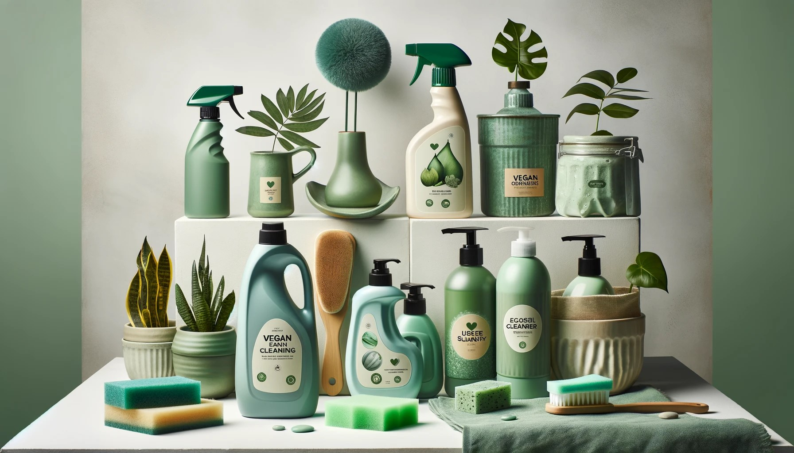
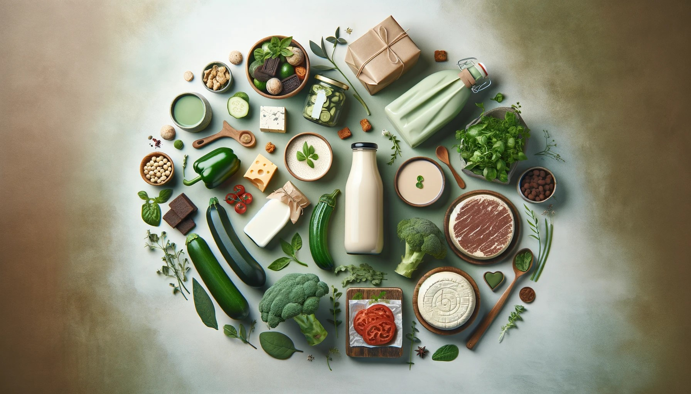

Isso é Vegano?
Cosméticos Veganos
Explore nossa seleção de marcas de cosméticos sem crueldade.
- Vizzela - Maquiagens, esmaltes e skincare
- Bauny - Maquiagens, esmaltes e skincare
- Baims - Maquiagens e skincare
- AmoKarité - Maquiagens
- Guava - Maquiagens
- Ciclo Cosméticos - Perfumes, body splashes e hidratantes
- Amyi - Perfumes
Produtos de Higiene Pessoal
Marcas de produtos de higiene pessoal respeitosos com o meio ambiente.
- Skala - Desodorantes e cuidados com pele e cabelo
- Davene - Sabonetes corporais - exceto produtos com mel adicionado
- Boni Natural - Higiene e Cuidados bucais
- Lola cosmetics - Cabelo, Corpo e linhas baby e kids
- Physalis Brasil - Cabelo, Corpo e linha baby
- Korui - absorventes reutilizáveis, coletores menstruais e calcinhas absorventes
- Salon Line - Não testa em animais e possui opções veganas
Produtos de Limpeza
Limpe sua casa sem prejudicar o planeta.
- Biowash - Produtos de limpeza em geral
- Bioz - Limpeza de roupas, cozinha e produtos multiuso
- Positiv.A - Possui as linhas cozinha, toda a casa, lavanderia, kits de limpeza e oceano limpo
- Girando o Sol - Produtos de limpeza em geral
- Ypê - Não testa em aniamis e possui opções veganas
- Búfalo - Não testa em aniamis e possui opções veganas
- Milão - Não testa em aniamis e possui opções veganas
Produtos Alimentícios
Descubra alimentos veganos deliciosos e nutritivos.
- Vida Veg - Laticínio Veganos
- Fazenda do Futuro - Lanches e Carnes vegetais
- Dona Muuh - Sorvetes veganos
- Nice foods - Leites vegetais e chocolates
- Super Vegan - Chocolates Veganos
- NotCo - Leite, maionese e crmes de leite vegetais
- Nude - Laticínio Veganos a base de aveia